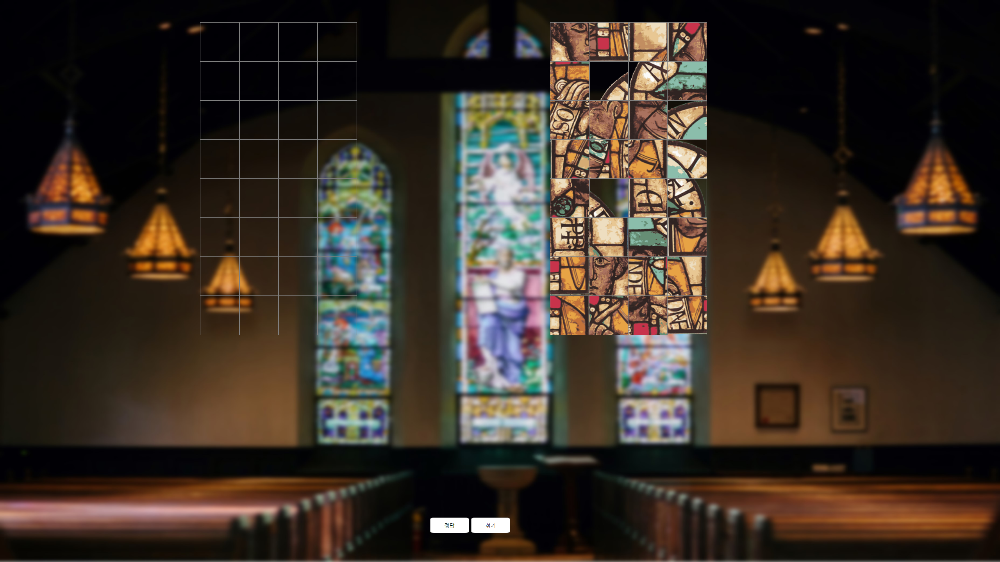
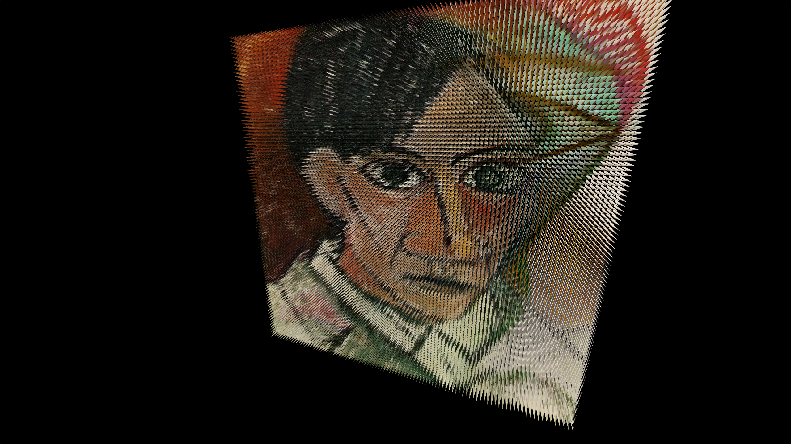
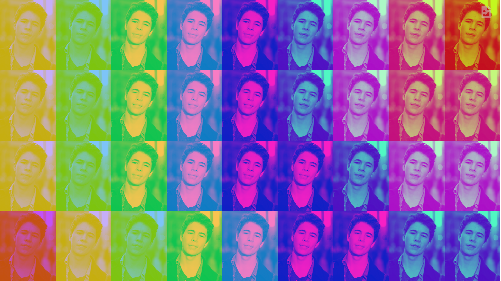
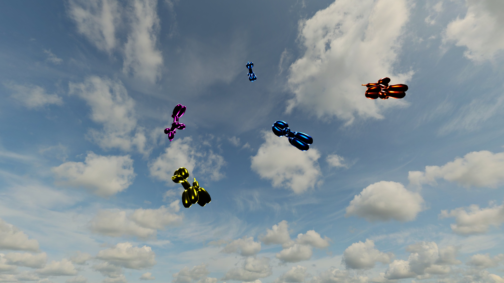

알타미라 동굴은 인류 최초의 동굴 벽화로 알려져 있다. 알타미라는 스페인의 세계 유산으로서 '높은 곳에서 바라보는 전망' 이라는 뜻을 가지고 있다. 후기 구석기 시대의 유적으로서 야생 동물의 뼈와 손으로 그린 암벽화가 그대로 보존되고 있다. 원시인들은 숯이나 황토, 적철석으로 형상을 그리거나 자연염료를 이용해 그림을 그렸다. 더군다가 명암법이 드러나 있어 일부 형상에는 3차원 이미지가 나타나기도 한다. 이렇듯 현대 예술가들이 그렸다고 이상하지 않을 정도로 동물의 생김새나 생동감 넘치는 표현력을 확인할 수 있다.
로마네스크

예언자 다니엘 - 작가미상
로마네스크 미술은 지역에 따라 다를 수 있으나 기원후 약 1,000년부터 고딕 양0식이 13세기 이후에 나타날 때까지의 서유럽의 미술을 가리킨다.
고대로마의 영향을 받은 건축양식을 로마네스크(로마풍)이라고 불렀으나, 다양한 양식의 영향을 통해 생겨난 중세 중기의 양식을 로마네스크 양식이라고 부르게 되었다.
작품 예언자 다니엘은 독일 남부 유리 화가에 의해 스테인드글라스 기법으로 제작되었다. 스테인드 글라스는 어두운 성당 내부에 색색의 빛을 비출 목적으로 발전해온 기법이다. 따라서 성경의 인물이 주제가되는 경우가 많고, 예언자 다니엘 또한 구약성경 다니엘서에 등장하는 유대인을 모델로한 작품이다.
고딕
파리 노트르담 대성당
파리 노트르담 대성당은 프랑스 후기 고딕 양식의 성당이다. 로마네스크 건축과는 다르게 첨탑으로 인해 수직선이 강조되어 나타나며 얇은 기둥과 넓은 창을 통해 신비롭고 경건한 분위기의 내부를 갖고 있다. 이 대성당은 약 200여년간 건축되었으며 오늘날까지 대표적인 고딕 양식 건축물로 말해진다.
르네상스
비너스의 탄생 - 산드로 보티첼리
르네상스란 중세와 근세를 이어주며 예술 전반에 걸친, 고대 그리스와 로마 문명의 재인식, 재수용을 의미하는 문예부흥이라 말할 수 있다. 비너스의 탄생은 이 시기의 산드로 보티첼리 대표작 중 하나이다. 로마 신화에서 사랑과 아름다움의 여신인 비너스가 성숙한 여성의 모습으로 바다에서 탄생하는 내용을 묘사한 작품으로서, 비너스의 왼쪽 어깨 기울기는 불가능하지만 미를 표현하기 위해 묘사되었다.
바로크
성 도마의 의심 - 카라바조
바로크는 미술 뿐만 아니라 다른 예술 분야에서도 존재하는 예술 유형이다. 인간 중심적 사고와 감정들을 중요시하고 역동적인 형태를 포착하여 명암을 극명하게 표현한다는 특징을 보인다. 대표 작품은 카라바조의 '성 도마의 의심' 이 있다. 어둠을 활용하여 인물의 외형을 표현하고 이전에는 성스럽게 다루었던 성경의 내용을 인간의 시선에서 보다 현실적으로 묘사했다는 점이 상징적이다.
낭만주의
민중을 이끄는 자유의 여신 - 외젠 들라크루아
낭만주의의 대표작인 민중을 이끄는 자유의 여신은 외젠 들라크루아가 프랑스 7월 혁명을 기념하기 위해 1830년에 그린 그림이다. 가운데 여성은 자유를 상징하며, 한 손에는 프랑스 국기를 다른 손에는 총검을 휘두르고 있다. 절제와 균형을 중시한 신고전주의와는 달리 낭만주의는 표현이 선행하고 딱딱한 선이나 단정한 형태보다는 있는 그대로의 생생하고 강렬한 색채를 우선시킨다.
인상주의
파리의거리, 비오는 날 - 구스타브 카유보트
인상주의는 대상을 보고 작가가 느끼는 순간적인 인상을 그려나가는 미술 사조이다. 하지만 카유보트가 이 그림을 그릴 때는 인상주의보다 대상을 있는 그대로 묘사하는 사실주의 방식을 사용하여 그렸다. 파리거리의 구성 요소를 자세하게 묘사하고 있는 점에서 이를 확인할 수 있다. 이러한 작품에 비도 실제로 내리는 효과를 표현하고자 하였다.
후기인상주의
그랑자트섬의 일요일 오후(1884~1886) - 조르주 쇠라
후기 인상주의는 19세기 후반, 인상주의에 만족하지 못한 작가들에 의해 생겨났으며, 대상의 본질을
표현하고자한 화풍이 특징인 양식이다.
그랑자트섬의 일요일 오후는 조르주 쇠라의 가장 유명한 작품이며, 독특하게 점으로 그렸다는 특징이 있다.
색채가 시각에 미치는 영향에 관한 과학 이론을 연구해, 지금의 인쇄방식과 비슷한 방식으로 그린 그림으로 묘한
느낌을 준다.
입체주의

자화상 - 피카소
여러 시점에서 바라본 대상을 하나의 화폭에 담아내는 방식인 입체주의는 피카소가 그 시초로 알려져 있다. 그림에 표현된 자화상은 각각 25살, 90살의 자화상이다. 피카소가 그린 자화상의 본질은 변하지 않았기 때문에 3차원 환경에서 하나의 객체로 나타내고자 했다. 2D 로 된 그림을 3D 로 변환하기 위해 ThreeJS 의 BufferGeometry 을 사용하여 UV mapping 을 수행했다. 각각의 객체들을 하나의 그룹으로 구성하고 사용자의 시점에 따라서 서로 다른 자화상이 보일 수 있도록 라이팅 각도를 조절하여 카메라에 보이는 방향에 따라 달라질 수 있도록 구현했다. 오빗컨트롤로 마우스 드래그를 통해 회전시켜 양면에 렌더링 된 작품을 감상할 수 있도록 했다.
다다이즘
L.H.O.O.Q - 마르셀 뒤샹
낭만주의의 대표작인 민중을 이끄는 자유의 여신은 외젠 들라크루아가 프랑스 7월 혁명을 기념하기 위해 1830년에 그린 그림이다. 가운데 여성은 자유를 상징하며, 한 손에는 프랑스 국기를 다른 손에는 총검을 휘두르고 있다. 절제와 균형을 중시한 신고전주의와는 달리 낭만주의는 표현이 선행하고 딱딱한 선이나 단정한 형태보다는 있는 그대로의 생생하고 강렬한 색채를 우선시킨다.
초현실주의
잘못된 거울 - 르네 마그리트
초현실주의란 1920년대 초 프랑스를 중심으로 퍼진 예술사조 중 하나인데, 이는 인간의 자유로운 상상력으로 지성을 초월한 꿈이나 무의식의 세계를 해방하는 것으로서 초현실적인 미를 창조하고자 한다. 잘못된 거울은 르네 마그리트의 대표작 중 하나로, 푸른 하늘을 둘러싼 인간의 눈을 묘사한 작품이다. 그림 속의 눈동자가 파란 하늘을 보고 있는데, 이 때 우리가 보는 저 하늘이 실제 하늘인지, 거울처럼 비친 허상의 하늘인지, 혹은 우리의 눈으로 보는 이 세상이 실제의 세상이 아닌 거울에 비친 가짜의 세상인지 헷갈리듯 깊이 생각할 수 있도록 유도하고자 했다. 하늘이 채워져 있던 부분에 camera를 통한 화면을 굴곡지게 채워 넣었고, 눈동자가 굴러가도록 가공 및 제작했다.
추상표현주의
No.5 잭슨 폴록
추상표현주의는 개인마다 자유롭게 추상적인 형식으로 자신의 감정을 표현해내는 예술사조다. 잭슨 폴록은 넓은 캔버스에 페인트를 흩뿌리는 방식의 드리핑 기법으로 작품을 그리는 자신만의 독창적인 방식을 창안했다. 역동적인 움직임으로 캔버스 위에 페인트들을 여러 겹으로 떨어뜨린다는 점에서 액션 페인팅이라고도 불린다.
팝아트

마릴린 먼로 - 앤디워홀
팝아트는 기존의 예술에 대해서 고결하고 순수하게 취급하던 관념들을 타파하고 대량 생산된 작품들로 예술은 복제되고 소비할 수 있는 존재라는 메세지를 던진다. 대표적인 작가인 앤디워홀은 실크 스크린을 사용하여 당시 TV 매체를 통해서 대중들에게 널리 알려진 배우들의 사진을 자신의 의도에 맞게 가공하여 작품을 인쇄하였다.
키치

풍선개 - 제프 쿤스
1994년부터 2000년까지 제작한 5개의 Balloon Dog은 제프쿤스가 제작했다. 바람이 빠지는 속성의 풍선대신 단단한 재료를 사용함으로써 작품의 형태는 변하지 않고 영구보존적인 성격을 갖게 한다.또한 작은 크기의 상품들이 기념비적인 규모로 크게 바뀜으로써 일상생활에서 익숙한 사물이 낯선 사물로 바뀌게 된다. 이러한 낯선 효과들은 상품을 예술작품의 지위로 위치시키는 의도적인 전략이다. 즉 새로움을 부여받아 상품이 예술이 되는 것이다.
스트리트
그래피티 - 작가미상
거리 미술은 처음 낙서로 시작되었으며 현재는 야외전시, 거리 퍼포먼스, 낙서, 벽화 등 개방된 공간에서 예술가들이 행하는 예술을 포괄적으로 지칭하고 있다. 벽돌로 지어진 벽에 그려진 그래피티를 부수는 인터랙션을 주기 위해 three.js와 ammo.js를 사용했으며 Three.Raycast()를 통해 해당 방향을 읽어오고 ammo.js를 활용한 물리적인 힘을 가해 벽이 부숴지도록 가공 및 제작했다.
인터랙션 웹 전시회의 마지막으로서, 벽을 부수고 난 후 ‘Thank You’ 라는 문구를 추가해주었고, 가로로 마우스를 이동함에 따라 이를 회전시킬 수 있도록 했다.